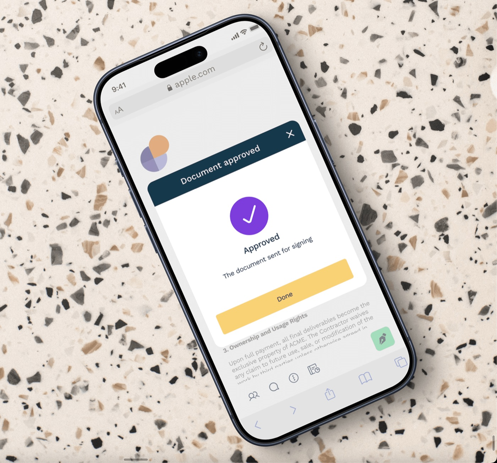
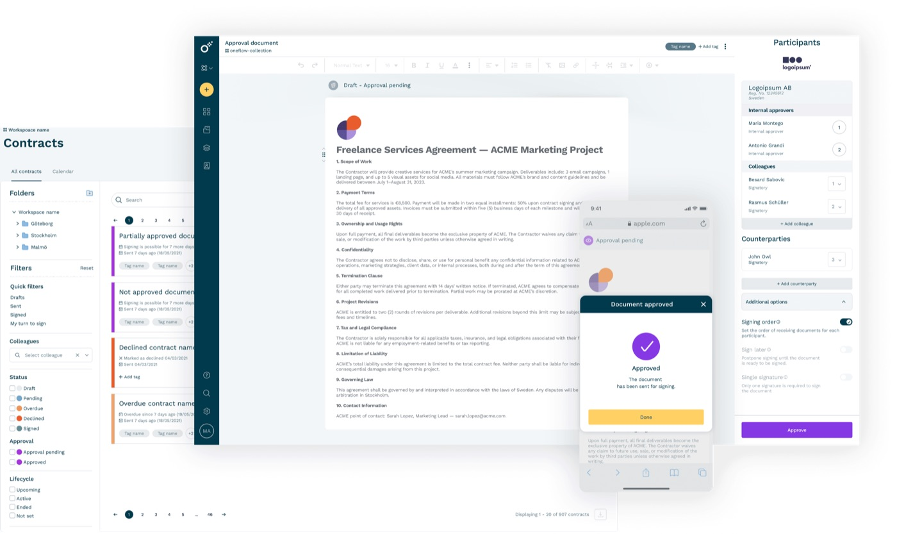
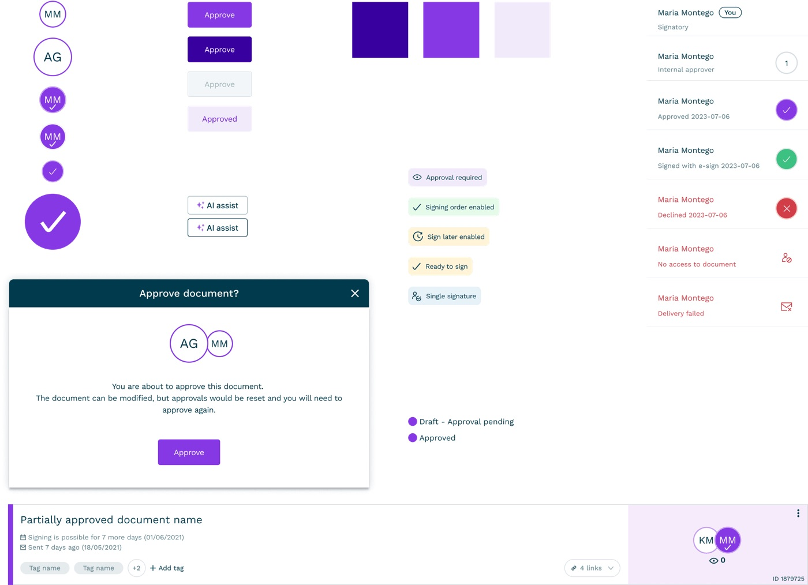
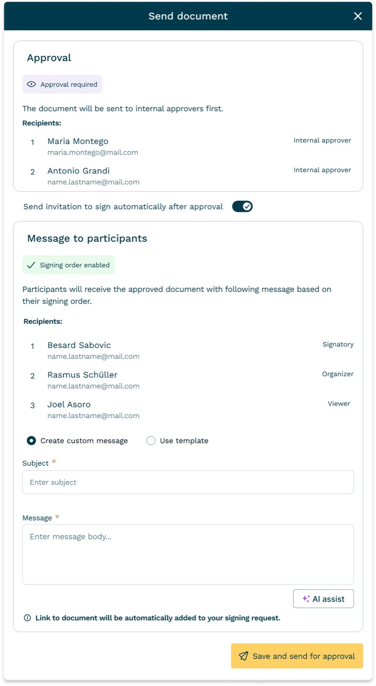

Contract approval flow
Designed approval workflows that made contract lifecycles trackable, compliant, and fast to review.

Context
Oneflow is a contract management platform for B2B teams. Approvals happened across email, Slack, and checklists, making it impossible to track who needed to sign and where contracts got blocked.
Problem
Research
- Analyzed enterprise workflows + support tickets + sales requests
- Approval steps were invisible, inconsistent, and not tracked, leading to delays and missed handoffs
Root causes
- No structured way to request/track approvals
- Unclear responsibilities
- Decisions scattered across channels
My approach
- 01Mapped real approval workflows across legal, finance, and sales
- 02Designed parallel/simple Approval Flows
- 03Ensured backend compatibility, reused existing patterns
- 04Tested flows with enterprise users
Results and impact
“This approval flow finally gives us the audit trail we need for compliance, and our sales team can actually see where contracts get stuck.”
— Enterprise Customer Success ManagerWorking with constraints
No new roles or states possible
We had to design the flow entirely within existing architecture. Building a brand new "Approval" role would slow delivery and create technical debt; creating a new approval flow would take months of development.
Impact: Months of development vs. weeks — had to get creative with existing architecture.
Key design challenges
Participants clutter
The current Participants tab mixed signers with approvers, creating visual noise and confusion about who needed to do what.
Impact: Users couldn't quickly scan approval status or identify bottlenecks, leading to confusion and lower customer satisfaction.
Status confusion
After renaming documents to "Approval pending," users stayed confused — the document still behaved like a draft, creating mixed signals.
Impact: More support calls and confused users, delayed approvals.
Send modal issues
User tests showed the Send modal left users guessing: would messages go to approvers or signers? This uncertainty caused hesitation and testing mistakes.
Impact: Important approvals delayed because users weren't sure who would get notified.

Design solutions
Reuse over rebuild
Extended the participant list UI with approval roles instead of building separate flows. Reused existing signing workflow logic for consistency.
Result: Faster delivery, familiar patterns. Cut engineering build time from months to weeks.

Renamed state back to Draft
I renamed status to "Draft – Approval pending" for crystal-clear communication about document state. Users expected drafts to behave like drafts.
Result: Clear labeling eliminated confusion. "Draft – Approval pending" mimicked real user mental models.
Restructured and unified participants
Participants and counterparties are now clearly labeled with role distinction, status visibility, and real-time progress updates.
Result: Restructured information hierarchy to reduce cognitive load and improve scanning.

Send modal structure makeover
Introduced clear visual separation between approvers and signatories, with immediate understanding of who receives what messages.
Result: Visual grouping eliminated guesswork and reduced user anxiety about message targeting.
Design system updates
Created components for: colors, statuses, buttons, modal filters, participants, avatars, and contract cards.
Learnings and reflections
Didn't work
- Early prototypes didn't cover cases when approvers can also sign the contract
- Adding a proper approval status to contracts would add backend work
Surprised me
- A flexible flow could be built without backend changes
Would do differently
- Involve engineers sooner to avoid rollback and rework related to contract status
- Validate mixed approver/signer roles earlier in the process
- Made the Send flow a multi-step flow
More projects